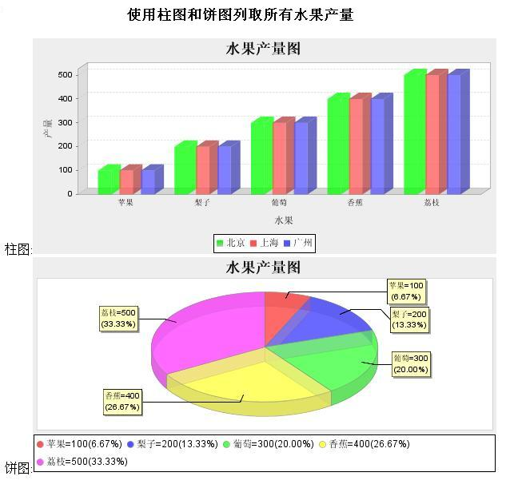
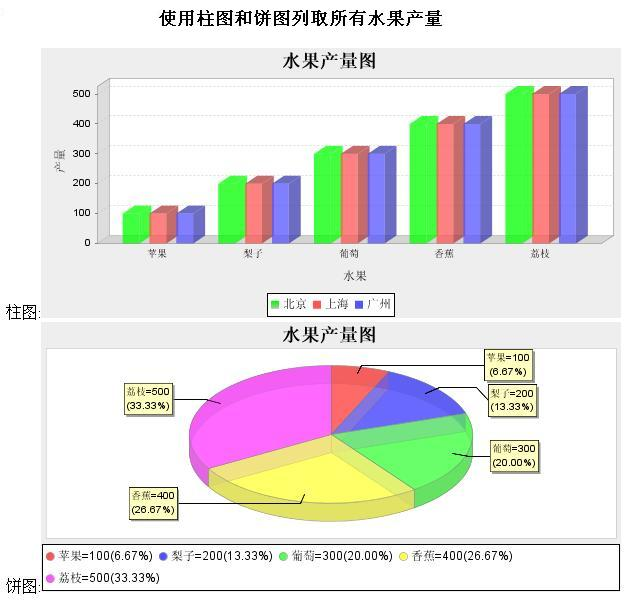

2008-04-10
在struts2中使用JFreeChart
关键字: struts2 jfreechart
继续上一篇的 在struts2中使用JasperReports，这篇是如何在web页面上输出chart(图表)。
1、在struts2中，默认的struts-default.xml中，并没有包含chart的result-type，它是插件的形式使用 的。把 struts2的解压包的lib里找到struts2-jfreechart-plugin-2.0.11.jar，拷贝到你的项目的 classpath里，同时在struts.xml里面增加一个chart的result-type。
2、需要再添加jfreechart-1.0.9.jar和jcommon-1.0.12.jar（JasperReports和JFreeChart都需要的）到你的classpath里面。
3、在你的action代码里，返回一个JFreeChart对象即可。
ListAllFruit4Bar2Action代码：
ListAllFruit4Pie2Action代码：
FruitService代码：
4、同时在jsp页面里显示--柱图和饼图。
增加一个ListAllFruit4BarAndPie的action：
ListAllFruit4BarAndPie.jsp代码：

生成的HTML的效果图如下：

下面是除了依赖的jar以外的所有源代码，share出来，欢迎下载。
1、在struts2中，默认的struts-default.xml中，并没有包含chart的result-type，它是插件的形式使用 的。把 struts2的解压包的lib里找到struts2-jfreechart-plugin-2.0.11.jar，拷贝到你的项目的 classpath里，同时在struts.xml里面增加一个chart的result-type。
- <result-types>
- <result-type name="chart" class="org.apache.struts2.dispatcher.ChartResult"/>
- </result-types>
- <action name="ListAllFruit4Bar2" class="chart.ListAllFruit4Bar2Action">
- <result name="success" type="chart">
- <param name="chart">chart</param>
- <param name="height">400</param>
- <param name="width">700</param>
- </result>
- </action>
- <action name="ListAllFruit4Pie2" class="chart.ListAllFruit4Pie2Action">
- <result name="success" type="chart">
- <param name="chart">chart</param>
- <param name="height">400</param>
- <param name="width">700</param>
- </result>
- </action>
2、需要再添加jfreechart-1.0.9.jar和jcommon-1.0.12.jar（JasperReports和JFreeChart都需要的）到你的classpath里面。
3、在你的action代码里，返回一个JFreeChart对象即可。
ListAllFruit4Bar2Action代码：
- package chart;
- import org.jfree.chart.JFreeChart;
- import com.opensymphony.xwork2.ActionSupport;
- public class ListAllFruit4Bar2Action extends ActionSupport {
- private static final long serialVersionUID = 1L;
- private JFreeChart chart;
- @Override
- public String execute() throws Exception {
- chart = FruitService.createBarChart();
- return SUCCESS;
- }
- public JFreeChart getChart() {
- return chart;
- }
- }
ListAllFruit4Pie2Action代码：
- package chart;
- import org.jfree.chart.JFreeChart;
- import com.opensymphony.xwork2.ActionSupport;
- public class ListAllFruit4Pie2Action extends ActionSupport {
- private static final long serialVersionUID = 1L;
- private JFreeChart chart;
- @Override
- public String execute() throws Exception {
- chart = FruitService.createPaiChart();
- return SUCCESS;
- }
- public JFreeChart getChart() {
- return chart;
- }
- }
FruitService代码：
- package chart;
- import org.jfree.chart.ChartFactory;
- import org.jfree.chart.JFreeChart;
- import org.jfree.chart.plot.PlotOrientation;
- import org.jfree.data.category.CategoryDataset;
- import org.jfree.data.category.DefaultCategoryDataset;
- public class FruitService {
- public static JFreeChart createBarChart() {
- CategoryDataset dataset = getDataSet2();
- JFreeChart chart = ChartFactory.createBarChart3D(
- "水果产量图", // 图表标题
- "水果", // 目录轴的显示标签
- "产量", // 数值轴的显示标签
- dataset, // 数据集
- PlotOrientation.VERTICAL, // 图表方向：水平、垂直
- true, // 是否显示图例(对于简单的柱状图必须是false)
- true, // 是否生成工具
- true // 是否生成URL链接
- );
- return chart;
- }
- private static CategoryDataset getDataSet2() {
- DefaultCategoryDataset dataset = new DefaultCategoryDataset();
- dataset.addValue(100, "北京", "苹果");
- dataset.addValue(100, "上海", "苹果");
- dataset.addValue(100, "广州", "苹果");
- dataset.addValue(200, "北京", "梨子");
- dataset.addValue(200, "上海", "梨子");
- dataset.addValue(200, "广州", "梨子");
- dataset.addValue(300, "北京", "葡萄");
- dataset.addValue(300, "上海", "葡萄");
- dataset.addValue(300, "广州", "葡萄");
- dataset.addValue(400, "北京", "香蕉");
- dataset.addValue(400, "上海", "香蕉");
- dataset.addValue(400, "广州", "香蕉");
- dataset.addValue(500, "北京", "荔枝");
- dataset.addValue(500, "上海", "荔枝");
- dataset.addValue(500, "广州", "荔枝");
- return dataset;
- }
- public static JFreeChart createPaiChart() {
- DefaultPieDataset data = getDataSet();
- JFreeChart chart = ChartFactory.createPieChart3D("水果产量图", // 图表标题
- data,
- true, // 是否显示图例
- false,
- false
- );
- PiePlot plot = (PiePlot) chart.getPlot();
- resetPiePlot(plot);
- return chart;
- }
- private static void resetPiePlot(PiePlot plot) {
- String unitSytle = "{0}={1}({2})";
- plot.setNoDataMessage("无对应的数据，请重新查询。");
- plot.setNoDataMessagePaint(Color.red);
- //指定 section 轮廓线的厚度(OutlinePaint不能为null)
- plot.setOutlineStroke(new BasicStroke(0));
- //设置第一个 section 的开始位置，默认是12点钟方向
- plot.setStartAngle(90);
- plot.setToolTipGenerator(new StandardPieToolTipGenerator(unitSytle,
- NumberFormat.getNumberInstance(),
- new DecimalFormat("0.00%")));
- //指定图片的透明度
- plot.setForegroundAlpha(0.65f);
- //引出标签显示样式
- plot.setLabelGenerator(new StandardPieSectionLabelGenerator(unitSytle,
- NumberFormat.getNumberInstance(),
- new DecimalFormat("0.00%")));
- //图例显示样式
- plot.setLegendLabelGenerator(new StandardPieSectionLabelGenerator(unitSytle,
- NumberFormat.getNumberInstance(),
- new DecimalFormat("0.00%")));
- }
- private static DefaultPieDataset getDataSet() {
- DefaultPieDataset dataset = new DefaultPieDataset();
- dataset.setValue("苹果",100);
- dataset.setValue("梨子",200);
- dataset.setValue("葡萄",300);
- dataset.setValue("香蕉",400);
- dataset.setValue("荔枝",500);
- return dataset;
- }
- }
4、同时在jsp页面里显示--柱图和饼图。
增加一个ListAllFruit4BarAndPie的action：
- <action name="ListAllFruit4BarAndPie" class="">
- <result name="success" type="dispatcher">/WEB-INF/chart/ListAllFruit4BarAndPie.jsp</result>
- </action>
ListAllFruit4BarAndPie.jsp代码：
- <%@ page contentType="text/html; charset=UTF-8" %>
- <html>
- <head>
- <title>ListAllFruit4BarAndPie</title>
- </head>
- <body>
- <center><h2>使用柱图和饼图列取所有水果产量</h2></center>
- 柱图:<img src="chart/ListAllFruit4Bar2.action">
- 饼图:<img src="chart/ListAllFruit4Pie2.action">
- </body>
- </html>
生成的HTML的效果图如下：

下面是除了依赖的jar以外的所有源代码，share出来，欢迎下载。
评论
jy02411368
2008-10-08
回复
杂说你好呢？说的是JFREECHART 下载的包却是JASPER的例子？？？
shaqiang32
2008-09-28
回复
李大哥，我是小刘啊，居然在javaeye都能碰到，，，这个好像是你上次教我的那个报表程序？
发表评论

liyanboss

我的留言簿 >>更多留言
最近加入圈子
最新评论
-
struts2+spring2+hibernat ...
caoyangx 写道 有那么吃惊吗？
-- by liyanboss -
struts2+spring2+hibernat ...
-- by caoyangx -
struts2+spring2+hibernat ...
加struts2-spring-plugin-2.0.11.jar，web.xml ...
-- by tiandis -
在struts2中使用JasperRe ...
liukidd 写道如果数据量大，这种方法可行吗？你可以mock大量的数据，做个性 ...
-- by liyanboss -
利用JavaMail收/发Gmail ...
我搞了两天，所有的例子都试验过，都是能发，但是标题为空，发附件都成一大片乱马，楼主 ...
-- by black_zerg


评论排行榜